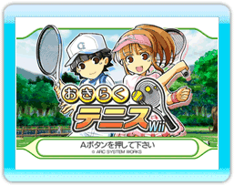
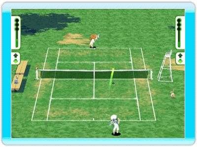
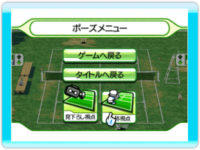

5 |
操作方法 |
 |

おきらくテニスWiiの操作方法を説明します。
Wiiリモコンのポインターでカーソルを動かします。 ●Ａボタン Ａボタンを押すと決定します。 ●Ｂボタン Ｂボタンを押すと前の画面に戻ります。
 ●Wiiリモコンを振る ゲーム中にWiiリモコンを振る事で球を打ち返す事ができます。 右から左に振る・フォアハンド 左から右に振る・バックハンド 上から下に振る・ドロップショット 下から上にふる・ロブ 相手の球が上に上がると、スマッシュ専用の構えになります、 この時にタイミング良くWiiリモコンを振ると強烈なスマッシュを打つことができます。 ●Ａボタン Ａボタンを押しながらリモコンを振る事で、スーパーショットを打つことができます。 また、サーブを打つ際のトスアップにも使用します。 ●十字ボタン 十字ボタンの上を押すと前衛に、下を押すと後衛に、キャラクターのポジションを切り替える事ができます。 自分が球を打ち、相手が打ち返してくるまでの間に左右どちらかのボタンを押す事で、相手の球筋を予測をする事ができます、予測が当たるといつもより早く動き出す事ができますが、外れると逆に反応が遅れてしまいます。 ●－ボタン ポーズメニューを表示します。
 ●ゲームへ戻る ポーズメニューを抜け、ゲームに戻ります。 ●タイトルへ戻る ゲームを中断し、タイトル画面へ戻ります。 ●見下ろし視点 コート全体を見下ろす視点になります、 プレイヤーが複数の場合は、この視点のみになります。 ●一人称視点 プレイヤーが１人の場合、この視点を選ぶ事ができます、 使用キャラクターのすぐ後ろからの視点で、 臨場感のあるゲームを楽しむ事ができます。 |
 |
 |
 |